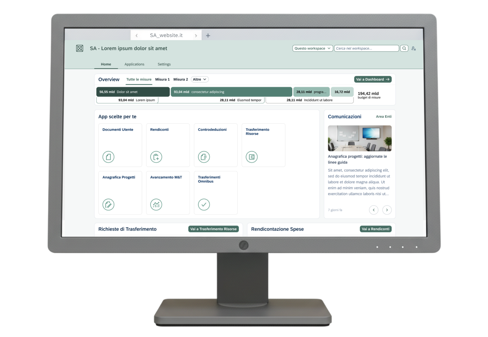
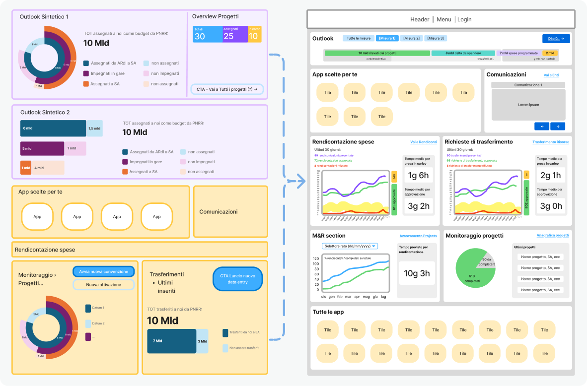
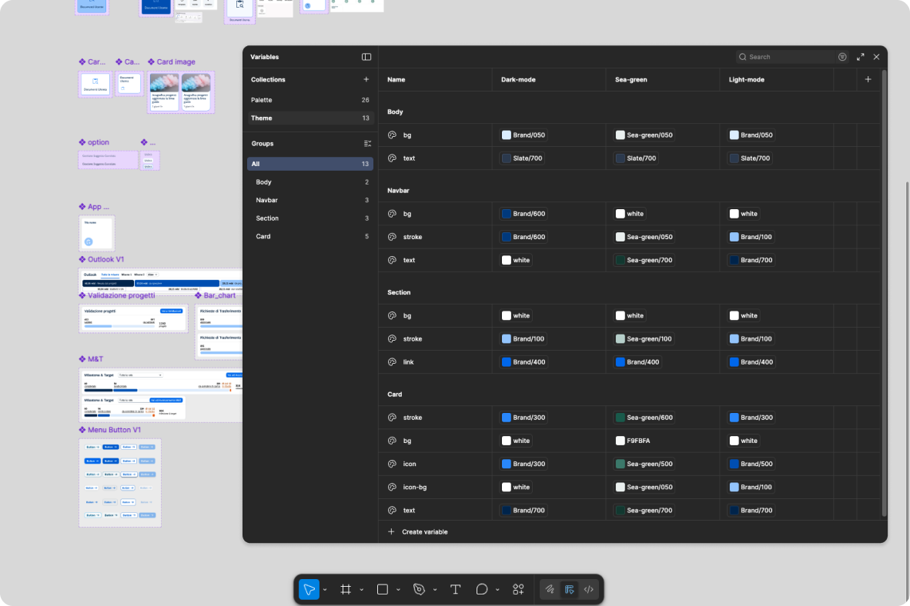
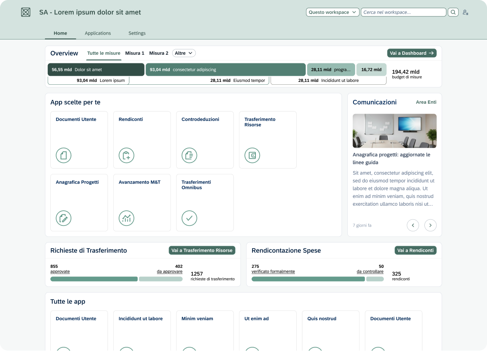
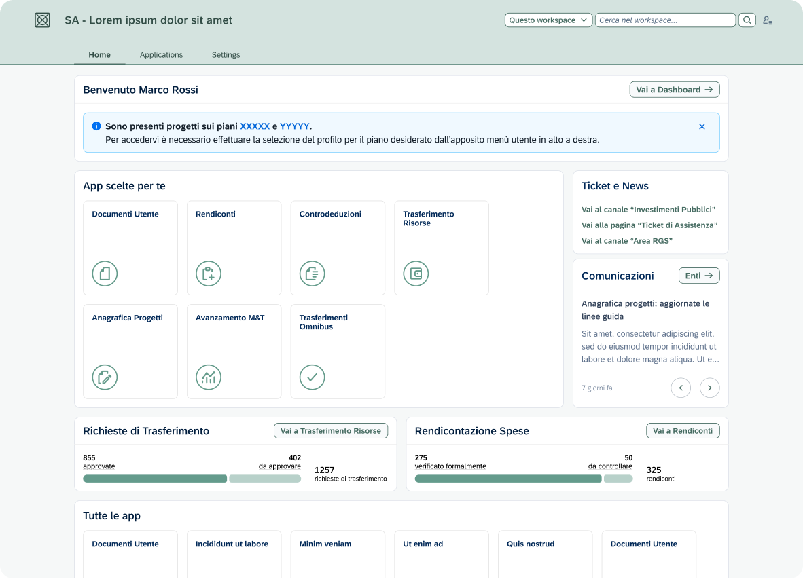
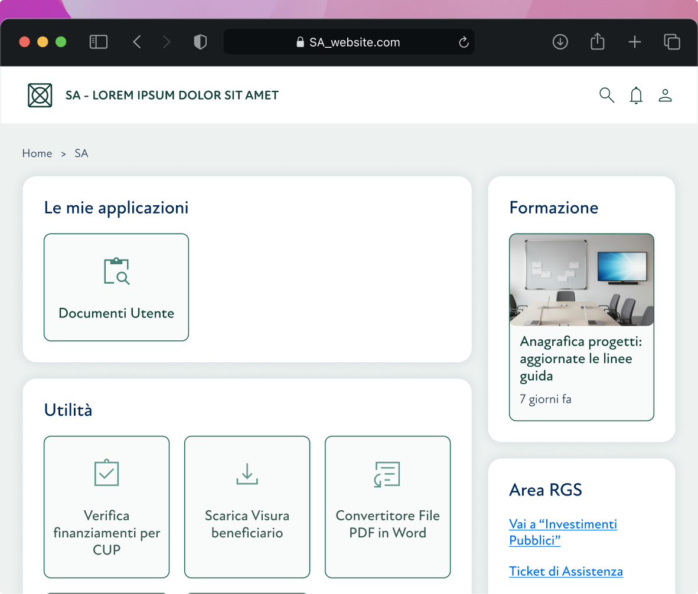

Public Administration system redesign
Role: UX & UI Designer, Accessibility specialist
Scope: Analysis, Data visualisation research, Interface design

Context
This PA system serves as a centralized platform through which public administrations, offices, and operational units involved in implementation can fulfill monitoring, reporting, and control obligations for pubblicly funded programs and projects.
In general, the system collects, shares, monitors and manage data and supports the reporting and control over the institutions activities accessing the funds.

Contribution and objectives
As part of the design team, I was responsible for the redesign of the platform. We needed to introduce a new and minimal look, in keeping with 2025 design system styles. We also had to stick to SAP Fiori Design System.
We managed to evolve from a generic and confusing product to a cohesive, modern UI with sharp CTAs and essential new features. The data visualization was built from scratch: we took raw data and mapped it to the client’s specific requirements to create impactful and accessible charts and diagrams. In parallel, we also carried out an analysis and simplification of user roles, reviewing documentation provided by the client and identifying common patterns and overlaps among approximately twenty predefined user profiles.
When presenting the initial UI design to the client, Figma variables with modes were utilized to enable seamless switching between different themes during the presentation.

Value added
The design principles applied are:
- Clear and accessible Data visualisation
- Exhaustive data presentation
- Synthetic CTA naming
Snapshots & annotations

The layout was designed to organise a complex set of administrative data in straightforward data viz and modular card system. The "Overview" section allows the user to monitor financial flows (e.g., the 194.42 billion budget) easily, before delving into the operational details.
Quick action buttons (e.g. "Go to Reports") are strategically placed within each widget. The horizontal tab system in the body of the page allows you to navigate between "Overview" and "All Measures" without losing the context of the work session, reducing cognitive load.
To ensure maximum readability, we adopted a color palette based on shades of green and cool gray, with optimized contrast ratios. Rapid visual recognition is facilitated by the use of stylized icons alongside app labels.

The upper section uses a high-contrast blue alert banner to communicate critical updates (e.g., projects on the XXX plans) immediately after the initial greeting. This hierarchy ensures that the user does not overlook system communications before proceeding with the use of the custom applications in the section below.
In this alternate version, we opted for:
- Direct access buttons and quick links, to reduce the number of clicks
- Desaturated outlined buttons to ensure greater visual comfort
- Overall modern and elegant aesthetic

We created a clean version to establish a minimal design baseline First, we added delicate shadows which then were removed to stick to a modern flat design.
The widget layout was created to reduce the user's cognitive load by arranging functions into distinct macro-areas. This categorisation system allows for immediate visual scanning: the users quickly identify what they need, improving overall efficiency in daily navigation.